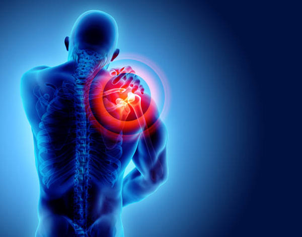

Subluxation Treatment
The process of Subluxation Treatment includes resetting the joint, pain relief, rehabiliation therpay, and in severe cases, surgery.In more technical terms, a subluxation is a "motion segment, in which alignment, movement intergrity, and/or physiological function are altered, although contact between joint surfaces remains intact".
Types of Subluxation
Vertabral Subluxation
The vertabral subluxation occurs with trauma to the spine, such as a fall or severe blow.Futhermore, this subluxation can inlvove a ligment rupture; which can compress spinal cord if not treated correctly.
Shoulder Subluxation
Shoulder subluxation simply means the ball of your upper arm comes partially out of place in your shoulder blade, which is know as the scapula.If you feel like your shoulder is sliding in and out of your socket, 9/10 you have shoulder subluxation.Lastly, pain and the inability to move your shoulder is common with shoulder subluxation.
Patellar Subluxation
When your are dealing with Patella subluxation your kneecaps tends to move partially out of the groove.This is the number one problem in children ad adolescents.Usually when you have direct contact to your patella the subluxation can occur but also if your ligaments are loose subluxation is likely ot happen also.
Conclusion
Overall, subluxation most often occur as the result of trauma to a joint. Subluxation is typically diagnosed with a phusical exam and imaging studies.Both of which we operate at our office, and we would be more than welcomed to accommodate for you!
